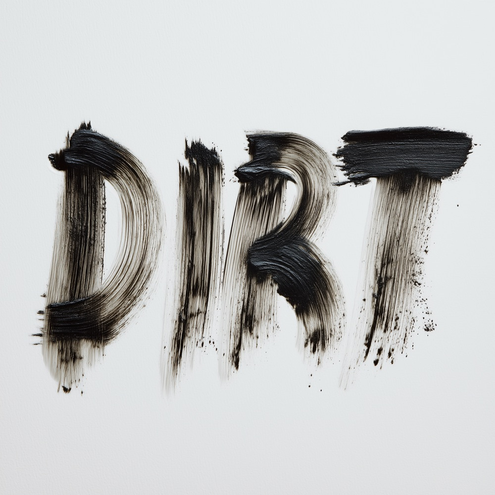

Еще я, конечно, сын, брат, гражданин… Но информацию об этом на сайте придется искать между строк.
Начнем с того, что я

А еще аранжирую ее и свожу. Так исторически сложилось, что это моя главная работа. Мои песни пели нишевые музыканты в маленьких потных клубах и Николай Носков для десятитысячной спортивной арены. Они звучали в кино и спектаклях и попадали в официальные международные плейлисты Apple Music. Что бы вы ни любили, нежную попсу или беспощадный экспериментал, от которого люди, матерясь, выходят из зала, я это писал. Или собираюсь написать. Для себя или на заказ. Может быть, мы это напишем вместе с вами!
Если надо выбрать одну мою самую лучшую песню, то вот она:
-

Djinn City, Michael James — DIRT музыка · текст · продакшн · вокал